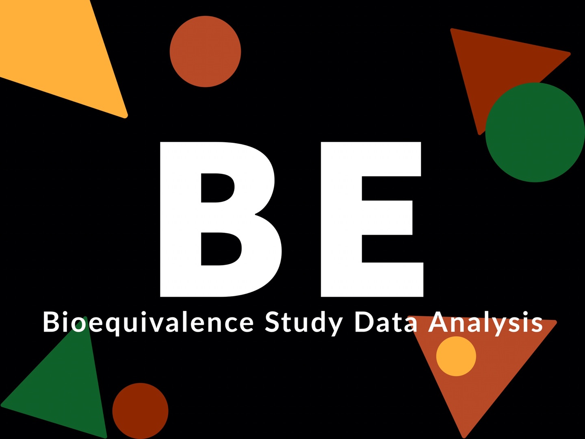

EDISON 사이언스 앱, R 샤이니 앱을 사용한 비구획분석과 생물학적동등성 분석의 통합
2020-04-13
책 머리에

생물학적동등성은 비구획분석으로 계산된 약동학적 파라미터를 사용하여 통계 분석을 수행함으로 판단할 수 있다. 현재는 이러한 분석을 위해서 여러 상용 소프트웨어를 필요로 하는 복잡한 단계를 거쳐야 한다. 따라서 분석 시간이 오래 걸리고 많은 비용이 소모되었다. 본 저자들은 EDISON 사이언스 앱, R 샤이니 앱을 사용하여 이 두 과정을 통합하였고, 이로서 농도-시간 자료로부터 비구획분석과 생물학적동등성 통계 분석까지 연속적으로 가능하게 되었다. 본 연구가 제시하는 EDISON 사이언스 앱, R 샤이니 앱을 통한 방법을 통해 정확한 분석을 빠른 시간에 수행할 수 있을 뿐만 아니라 오류를 줄이고 비용을 절감하는 효과를 가져올 수 있다.
한성필1, 윤석규2, 조용순3, 김형섭2, 배균섭2
- 가톨릭대학교 약리학교실,
- 울산대학교 서울아산병원 임상약리학과,
- 인제대학교 약리학교실
E-mail: 한성필 shan@catholic.ac.kr , 배균섭 ksbae@acp.kr